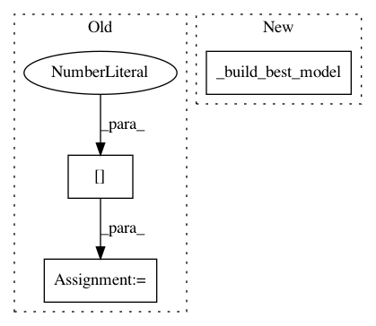

7aba2ef9c7d318d131024d528bc468fbeca96810,autokeras/engine/tuner.py,AutoTuner,final_fit,#AutoTuner#Any#,177
Before Change
return len(best_trial.metrics.metrics["val_loss"]._observations)
def final_fit(self, x=None, **fit_kwargs):
best_trial = self.oracle.get_best_trials(1)[0]
best_hp = best_trial.hyperparameters
model = self.hypermodel.build(best_hp)
self.adapt(model, x)
model.fit(x, **fit_kwargs)
After Change
return self.hypermodel.build(best_hp)
def final_fit(self, x=None, **fit_kwargs):
model = self._build_best_model()
self.adapt(model, x)
model.fit(x, **fit_kwargs)
return model
In pattern: SUPERPATTERN
Frequency: 4
Non-data size: 3
Instances
Project Name: keras-team/autokeras
Commit Name: 7aba2ef9c7d318d131024d528bc468fbeca96810
Time: 2020-07-25
Author: jin@tamu.edu
File Name: autokeras/engine/tuner.py
Class Name: AutoTuner
Method Name: final_fit
Project Name: keras-team/autokeras
Commit Name: 7aba2ef9c7d318d131024d528bc468fbeca96810
Time: 2020-07-25
Author: jin@tamu.edu
File Name: autokeras/engine/tuner.py
Class Name: AutoTuner
Method Name: get_best_model